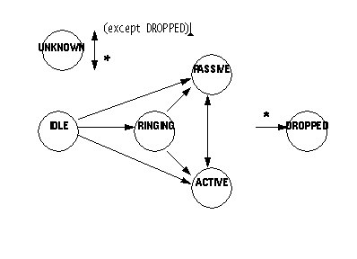

public interface TerminalConnection
TerminalConnection represents the relationship between a Connection and
a Terminal.
TerminalConnection.getConnection() and
TerminalConnection.getTerminal() methods, respectively.
Because a TerminalConnection is associated with a Connection, it there is also associated with some Call. The TerminalConnection describes the specific relationship between a physical Terminal endpoint with respect to an Address on a Call. TerminalConnections provide a physical view of a Call. For a particular Address endpoint on a Call, there may be zero or more Terminals at which the Call terminates. The TerminalConnection describes each specific Terminal on the Call associated with a particular Address endpoint on the Call. Many simple applications may not care about which specific Terminals are on the Call at a particular Address endpoint. In these cases, the logical view provided by Connections are sufficient.
The TerminalConnection interface in the core package has six states defined in real-world terms below:
TerminalConnection.IDLE |
This state is the initial state for all TerminalConnections. TerminalConnection objects do not stay in this state for long. They typically transition into another state quickly. |
TerminalConnection.RINGING |
This state indicates the a Terminal is ringing, indicating that the Terminal has an incoming Call. |
TerminalConnection.PASSIVE |
This state indicates that a Terminal is part of a telephone call but not in an active fashion. This may imply that a resource of the Terminal is being used and may limit actions on the Terminal. |
TerminalConnection.ACTIVE |
This state indicates that a Terminal is actively part of a telephone call. This usually implies that the party speaking on that Terminal is part of the telephone call. |
TerminalConnection.DROPPED |
This state indicates that a particular Terminal has permanently left the telephone call. |
TerminalConnection.UNKNOWN |
This state indicates that the implementation is unable to determine the state of the TerminalConnection. TerminalConnections may transition into and out of this state at any time. |
When a TerminalConnection moves into the
TerminalConnection.DROPPED state, it is no longer associated
with its Connection and Terminal. That is, both of these objects lose their
references to the TerminalConnection. However, the TerminalConnection still
maintains its references to the Connection and Terminal object for
application reference. That is, when a TerminalConnection moves into the
TerminalConnection.DROPPED state, the methods
TerminalConnection.getConnection() and
TerminalConnection.getTerminal() still return valid objects.

Note the TerminalConnection may transition into the
TerminalConnection.DROPPED state from any state, and into and
out of the TerminalConnection.UNKNOWN state from any state.
These properties about Connections and TerminalConnections are guaranteed
by the implementation. This relationship is further illustrated in the
description of such methods as Call.connect(),
Connection.disconnected(), and
TerminalConnection.answer(). The following chart defines the
specific relationship between Connection states and TerminalConnections.
| If the Connection is in state... | ... then the TerminalConnection is |
|---|---|
Connection.IDLE |
No TerminalConnections may exist on this Connection, that is, the
Connection.getTerminalConnections() method returns null.
|
Connection.INPROGRESS |
No TerminalConnections may exist on this Connection, that is, the
Connection.getTerminalConnections() method returns null.
|
Connection.ALERTING |
Zero or more TerminalConnections may exist on this Connection, and each
must be in the TerminalConnection.RINGING state.
|
Connection.CONNECTED |
Zero or more TerminalConnections may exist on this Connection, and each
must be in the TerminalConnection.PASSIVE or the
TerminalConnection.ACTIVE state. Note that when
TerminalConnections must into the TerminalConnection.DROPPED
state they are no longer associated with the Connection.
|
Connection.DISCONNECTED |
No TerminalConnections may exist on this Connection, that is, the
Connection.getTerminalConnections() method returns null. Note
that all TerminalConnections previously associated with this Connection will
move into the TerminalConnection.DROPPED state.
|
Connection.FAILED |
No TerminalConnections may exist on this Connection, that is, the
Connection.getTerminalConnections() method returns null. Note
that all TerminalConnections previously associated with this Connection will
move into the TerminalConnection.DROPPED state.
|
Connection.UNKNOWN |
Zero or more TerminalConnections may exist on this Connection, and each
must be in the TerminalConnection.UNKNOWN state.
|
TerminalConnection.answer() method. This
method answers a telephone call at a Terminal. This method moves the
TerminalConnection into the TerminalConnection.ACTIVE state
upon success. The TerminalConnection must be in the
TerminalConnection.RINGING state when this method is invoked.
CallListener interface on the Call object associated with this
TerminalConnection. In the core package, events are reported to a
CallListener when a new TerminalConnection is created and whenever a
TerminalConnection changes state. Listeners are added to Call objects via
the Call.addCallListener() method and more indirectly via the
Address.addCallListener() and
Terminal.addCallListener() methods. See the specifications for
the Call, Address, and Terminal interfaces for more information.
The following TerminalConnection-related events are defined in the core
package. Each of these events extend the TerminalConnectionEvent interface
(which, in turn, extends the CallEvent interface).
TerminalConnectionCreated |
Indicates a new TerminalConnection has been created on a Connection. |
TerminalConnectionRinging |
Indicates the TerminalConnection has moved into the
TerminalConnection.RINGING state.
|
TerminalConnectionActive |
Indicates the TerminalConnection has moved into the
TerminalConnection.ACTIVE state.
|
TerminalConnectionPassive |
Indicates the TerminalConnection has moved into the
TerminalConnection.PASSIVE state.
|
TerminalConnectionDropped |
Indicates the TerminalConnection has moved into the
TerminalConnection.DROPPED state.
|
TerminalConnectionUnknown |
Indicates the TerminalConnection has moved into the
TerminalConnection.UNKNOWN state.
|
CallListener,
TerminalConnectionListener,
TerminalListener,
TerminalConnectionEvent,
CallEvent| Modifier and Type | Field and Description |
|---|---|
static int |
ACTIVE
This state indicates that a Terminal
is actively part of a telephone call.
|
static int |
DROPPED
This state indicates that a
particular Terminal has permanently left the telephone call.
|
static int |
IDLE
This state is the initial state for
all TerminalConnection objects.
|
static int |
PASSIVE
This state indicates that a
Terminal is part of a telephone call but not in an active fashion.
|
static int |
RINGING
This state indicates the a Terminal
is ringing, indicating that the Terminal has an incoming Call.
|
static int |
UNKNOWN
This state indicates that the
implementation is unable to determine the state of the TerminalConnection.
|
| Modifier and Type | Method and Description |
|---|---|
void |
answer()
Answers an incoming telephone call on this TerminalConnection.
|
TerminalConnectionCapabilities |
getCapabilities()
Returns the dynamic capabilities for the instance of the
TerminalConnection object.
|
Connection |
getConnection()
Returns the Connection object associated with this TerminalConnection.
|
int |
getState()
Returns the state of the TerminalConnection object.
|
Terminal |
getTerminal()
Returns the Terminal associated with this TerminalConnection object.
|
TerminalConnectionCapabilities |
getTerminalConnectionCapabilities(Terminal terminal,
Address address)
Deprecated.
Since JTAPI v1.2. This method has been replaced by the
TerminalConnection.getCapabilities() method.
|
static final int IDLE
static final int RINGING
static final int PASSIVE
static final int ACTIVE
static final int DROPPED
static final int UNKNOWN
int getState()
Terminal getTerminal()
TsapiPlatformException - Implementation specific exception thrown if
the terminal cannot be located.Connection getConnection()
TsapiPlatformException - Implementation specific exception thrown if
the connection cannot be located.void answer()
throws PrivilegeViolationException,
ResourceUnavailableException,
MethodNotSupportedException,
InvalidStateException
TerminalConnection.ACTIVE.
TerminalConnection.RINGING state when this method is invoked.
According to the specification of the TerminalConnection object, this
state implies the associated Connection object is also in the
Connection.ALERTING state. There may be more than one
TerminalConnection on the Connection which are in the
TerminalConnection.RINGING state. In fact, if the Connection
is in the Connection.ALERTING state, all of these
TerminalConnections must be in the TerminalConnection.RINGING
state. Any of these TerminalConnections may invoke this method to answer
the telephone call.
TerminalConnection.PASSIVE state or the
TerminalConnection.DROPPED state. If a TerminalConnection
moves into the TerminalConnection.PASSIVE state, it remains
part of the telephone call, but not actively so. It may have the ability
to join the call in the future. If a TerminalConnection moves into the
TerminalConnection.DROPPED state, it is removed from the
telephone call and will never have the ability to join the call in the
future. The appropriate events are delivered to the application indicates
into which of these two states the other TerminalConnection objects have
moved.
Pre-conditions:
PrivilegeViolationException - The application did not have
proper authority to answer the telephone call. For example, the
Terminal associated with the TerminalConnection may not be in the
Provider's local domain.ResourceUnavailableException - The necessary resources to
answer the telephone call were not available when the method was invoked.MethodNotSupportedException - This method is currently not
supported by this implementation.InvalidStateException - An object was not in the proper state,
violating the pre-conditions of this method. For example, the Provider
was not in the Provider.IN_SERVICE state or the TerminalConnection was
not in the TerminalConnection.RINGING state.TsapiPlatformException - Implementation specific exception thrown if
the API call fails.TerminalConnectionListener,
ConnectionListener,
TerminalConnectionEvent,
ConnectionEventTerminalConnectionCapabilities getCapabilities()
The dynamic TerminalConnection capabilities require no additional arguments.
TerminalConnectionCapabilities getTerminalConnectionCapabilities(Terminal terminal, Address address) throws InvalidArgumentException, PlatformException
Note: This method has been replaced in JTAPI v1.2. The
TerminalConnection.getCapabilities() method returns the
dynamic TerminalConnection capabilities. This method now should simply
invoke the TerminalConnection.getCapabilities() method.
address - This argument is ignored in JTAPI v1.2 and later.terminal - This argument is ignored in JTAPI v1.2 and later.InvalidArgumentException - This exception is never thrown in
JTAPI v1.2 and later.PlatformException - A platform-specific exception occurred.Copyright © 2009 Avaya All Rights Reserved.